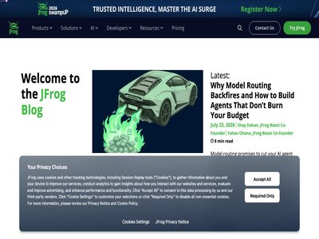

November 25, 2026 · 61 articles

US Treasury financial crimes unit becomes latest fed breach victim
November 25, 2026
FinCEN takes systems offline and extends filing deadlines while investigating 'unauthorized access' (The Register - Security)

CISA warns of critical unpatched flaw in Danfoss refrigeration controllers
November 25, 2026
The U.S. Cybersecurity and Infrastructure Security Agency (CISA) is warning about a critical vulnerability in Danfoss AK-SM 8xxA Series controllers used by food retailers to man... (BleepingComputer)

US Anti-Scam Surge Hits 800 Defendants and 29 Scam Compounds
November 25, 2026
DOJ's anti-scam surge has targeted over 800 defendants while the FBI has hit over 29 scam compounds (Infosecurity Magazine)

Your AI Coding Agent Just Leaked a Secret. Bots Found It on Docker Hub in 8 Seconds
November 25, 2026
Bots used AWS keys planted in Docker Hub images within 7.86 seconds. AI coding agent config files are now carrying real secrets into those same layers, because .gitignore does n... (GitGuardian Blog)

Attackers Target.NET Developers With Poisoned Job Assessments
November 25, 2026
Researchers discovered 13 malicious NuGet packages as part of a fake recruitment campaign that spreads malware and gives attackers access to developers' machines. (Dark Reading)

Two Newly Disclosed GeoServer Vulnerabilities Under Attack
November 25, 2026
Attackers are probing GeoServer instances for two high-severity flaws that can be chained with other bugs for unauthenticated RCE. The post Two Newly Disclosed GeoServer Vulnera... (SecurityWeek)
It's a Bot World. We're Just Living in It
November 25, 2026
Bot detection has become a losing game. Security teams need to limit privileged access for humans and their machine counterparts equally. (Dark Reading)
More Pentests Without More Pentesters: Where AI Safely Helps
November 25, 2026
Penetration testers spend a significant portion of their engagements on documentation, reporting, and other tasks outside of testing. PentestPad explains how AI can reduce this... (BleepingComputer)

The AI Threat Horizon: Why Speed, Edge AI and Baselines Are Our Best Defense
November 25, 2026
Unit 42 examines the evolution of AI-driven cyberattacks and outlines proactive defense strategies for security teams. The post The AI Threat Horizon: Why Speed, Edge AI and Bas... (Palo Alto Networks Unit 42)
InfraTrust warns of exploited supply chain flaws in network appliances
November 25, 2026
Eclypsium's November InfraTrust report warns that most infrastructure security advisories addressing exploited vulnerabilities over the past month involve flaws in third-party s... (BleepingComputer)
Cyber Insurers See New Divide: AI Defense 'Haves' & 'Have Nots'
November 25, 2026
Dark Reading Confidential Episode 23: Cyber insurers share their view of the AI-driven threat landscape and how mounting challenges are putting pressure on both sides of the pol... (Dark Reading)

Shufti Fraud Hub exposes suspicious links between seemingly legitimate accounts
November 25, 2026
Shufti has announced the launch of its Fraud Hub, a connected fraud intelligence layer designed to detect suspicious verification attempts, identify coordinated fraud networks a... (Help Net Security)

AI agents found an unpatched flaw after being told to “break in”
November 25, 2026
AI agents discovered a previously unknown vulnerability and later used it to take control of a university server. (Malwarebytes Labs)
ShinyHunters Claims Comeback, New Inception Group Rejects Alleged Ties
November 25, 2026
An account tied to ShinyHunters announced the group’s return, as Okta spots possible links between Inception and ShinyHunters hackers. The post ShinyHunters Claims Comeback, New... (SecurityWeek)

CVE-2026-131914 Exploited in an ASP.NET CSRF Library Last Released Nearly 18 Years Ago, With No Official Fix
November 25, 2026
Exploitation has been confirmed in Idunno.AntiCsrf for ASP.NET, whose last release was in December 2008. No official fix is available, requiring affected organizations to replac... (Joho no Todai)

Introducing Search for Agents
November 25, 2026
Flip one toggle to make your site searchable by AI agents - complete with automatic content indexing, a discoverable search API, and native HTTP QUERY support. (Cloudflare Blog)

Our 2026 Cybersecurity Predictions: What We Got Right, What We Got Wrong, and What Changed
November 25, 2026
Rapid7’s annual Security Predictions webinar returns on December 10, bringing our experts together to explore what the year ahead could hold for cybersecurity. Before sharing ou... (Rapid7 Blog)
Critical Drupal installer flaw under active attack (CVE-2026-132165)
November 25, 2026
Attackers have been exploiting CVE-2026-132165, a flaw that lets them take over unpatched Drupal sites without logging in, since at least November 19, the Drupal Security Team h... (Help Net Security)
Ground Truth: CISO Matt Martin on Building a Real Security Program Without an Enterprise Budget
November 25, 2026
Matthew Martin is Chief Information Security and Privacy Officer at Western Carolina University. The post Ground Truth: CISO Matt Martin on Building a Real Security Program With... (SecurityWeek)

Suspected ransomware attack disrupts cancer treatments, surgeries at Guadeloupe hospital
November 25, 2026
France’s national cybersecurity agency is investigating a suspected ransomware attack that impaired the computer systems of the University Hospital of Guadeloupe, forcing doctor... (The Record)
Never Let the Model See the Secret: Zero Data Retention Is Not Enough
November 25, 2026
Nearly 2 million bait prompts. Three breached AI providers. Stolen AWS keys tested within hours. Dragos showed that Zero Data Retention is a promise, not a control. Here is how... (GitGuardian Blog)
Rackspace Spot to Shut Down December 8 After Security Breach
November 25, 2026
US cloud provider Rackspace is shutting down Rackspace Spot. Running workloads are scheduled to stop at 5:00 p.m. CST on December 8, and users need to retrieve and migrate their... (Joho no Todai)

How AI App Builders Leak Their Own Credentials
November 25, 2026
Executive summary: AI app builders give generated apps owner-level access The Orca Research Pod found the same architectural mistake in multiple independent AI app builder platf... (Orca Security Blog)

Electrolux Smart Boilers in Ukraine Connect to Russian Servers, Raising Privacy Concerns
November 25, 2026
Researchers found Electrolux-branded smart boilers connecting to Russian servers, raising concerns about household data and privacy. A router in Ukraine recorded a water heater... (Security Affairs)

Hackers Exploit Two GeoServer Flaws as Researchers Warn of Unauthenticated RCE Chains
November 25, 2026
Threat actors are actively exploiting two newly patched security flaws in GeoServer, according to watchTowr. The vulnerabilities in question are CVE-2026-120705 and CVE-2026-129... (The Hacker News)
Thunderbird 161.0 Fixes CVE-2026-136226 Sender Spoofing in OpenPGP-Signed Email
November 25, 2026
Thunderbird 161.0 and extended-support release 153.8.0 ESR are now available. They fix a critical flaw that could cause a mismatch between the sender covered by OpenPGP signatur... (Joho no Todai)
Two exposed databases held over 3.5 billion records
November 25, 2026
Researchers found stolen passwords, session cookies and children's school records sitting in two open databases. (Malwarebytes Labs)
CVE-2026-123903: Critical VMware Directory Service Authentication Bypass affects vCenter
November 25, 2026
Overview On November 24, 2026, Broadcom released VMware Security Advisory VMSA-2026-0011 to address several new vulnerabilities, including CVE-2026-123903 , a critical authentic... (Rapid7 Blog)
PAN-OS Fixes CVE-2026-46300 Fragnesia Linux Kernel Vulnerability Exploited in the Wild
November 25, 2026
Palo Alto Networks has fixed Fragnesia, a Linux kernel privilege-escalation vulnerability, in its PAN-OS firewall operating system. Following PHP2Shell patches that blocked the... (Joho no Todai)

Tracking Incidents of Hacking Using AI Tools
November 25, 2026
Daniel Meissler is tracking incidents of AI-enhanced hacking, and the offensive harnesses the hackers are using. (Schneier on Security)
Credential Remediation Is Slow When You Don’t Know What Will Break
November 25, 2026
TL;DR More than 64% still valid after four years: GitGuardian’s State of Secrets Sprawl 2026 found that most valid secrets discovered in 2022 still worked in January 2026, becau... (The Hacker News)
US Treasury Investigates Cyber Incident Amid Reported Federal Agency Breaches
November 25, 2026
The Treasury’s Crimes Enforcement Network is investigating a cyber incident and took some services offline (Infosecurity Magazine)
Todoist Breach Exposes Legacy Password Hashes Retained After Method Was Retired
November 25, 2026
Customer information was exposed in a breach of the Todoist task-management service. The affected data included legacy SHA-1 password hashes, while integrations with external se... (Joho no Todai)
Gatwick drop-off customers' personal data exposed in supplier breach
November 25, 2026
AutoPay login and vehicle records affected, alongside limited payment information and customer service emails (The Register - Security)

Securing Grandma's groceries with Pierre Cadieux
November 25, 2026
Pierre takes us back to his early days on help desks in the 90s, where learning to correlate logs between Windows and Unix systems sparked the curiosity that eventually led him... (Cisco Talos)
GT13: AI-Assisted Hackers Target 22 Organizations Through Check Point Servers
November 25, 2026
GreyNoise tracks GT13, an unattributed, probably AI-assisted campaign that hit 22 organizations via Check Point management servers. It may still be running. GreyNoise detailed a... (Security Affairs)
Ransomware Attacks Surge 23% in October Following Record Quarter
November 25, 2026
The continued rise in ransomware attacks may reflect a new cyber environment, NCC Group researchers have warned (Infosecurity Magazine)
Ex-OpenAI Employee Accused of Bugging Company Offices Granted $1 Million Bail
November 25, 2026
A former OpenAI employee accused of concealing a covert recording device at the company's San Francisco offices will be allowed to be released from jail on a $1 million bond, a... (The Hacker News)
Australian Digital Duty of Care Bill Passes Both Houses With Global-Revenue-Linked Penalties and Direct Right of Action
November 25, 2026
Australia's Parliament has passed the Digital Duty of Care bill in both houses. The maximum penalty for breaching the duty will be the greater of 5% of a company's global revenu... (Joho no Todai)
Treasury's FinCEN takes systems offline after cybersecurity incident
November 25, 2026
The Treasury Department has taken some systems offline after a cybersecurity incident that “resulted in unauthorized access to a limited subset of its systems.” (The Record)
NCSC Shares Guidance to Tackle Agentic Threat From ARTEX-Like Tools
November 25, 2026
UK’s National Cyber Security Centre urges “strong operational discipline” to manage agentic offensive frameworks (Infosecurity Magazine)
UK Authorized Push Payment Losses Surge 22% as Fraudsters Steal £660m
November 25, 2026
Authorized push payment (APP) fraud increased 22% annually in the first half of the year (Infosecurity Magazine)
Anthropic wants to catch rogue AI activity without retaining your data
November 25, 2026
Anthropic has launched a public beta of Enterprise Frontier Safeguards (EFS), enabling organizations to detect potentially harmful AI activity across multiple interactions while... (Help Net Security)
Hackers Exploited CVSS 10.0 Hex.pm RCE Flaw to Compromise 6 Package Registry Servers
November 25, 2026
An attacker ran operating system commands on Monday on six production servers of Hex.pm, the package registry that Elixir and Erlang developers fetch their dependencies from. Th... (The Hacker News)
Hackers Exploit Unpatched Flaw in Defunct Idunno AntiCsrf Library
November 25, 2026
Attackers can exploit CVE-2026-131914 to achieve remote code execution via a single web request containing specially crafted data. The post Hackers Exploit Unpatched Flaw in Def... (SecurityWeek)
Police disrupt 57 illegal IPTV services and trace €26 million in crypto
November 25, 2026
A crackdown involving police from 11 countries has disrupted 57 illegal IPTV services and identified 321 pirate websites that draw more than 7.3 million visits a year. Europol c... (Help Net Security)
Maritime industry faces growing cyber threats as 50 ships targeted
November 25, 2026
US authorities investigate suspected cyberattacks on up to 50 commercial ships, with Iran and Russia under scrutiny and Fortinet flaws involved. The United States is investigati... (Security Affairs)
Drupal Flaw Found by Anthropic Scanner Exploited in Attacks
November 25, 2026
CISA has added the vulnerability to its KEV catalog and instructed federal agencies to patch it within three days. The post Drupal Flaw Found by Anthropic Scanner Exploited in A... (SecurityWeek)
Hackers reportedly breached CIA intelligence analysis system
November 25, 2026
Unknown attackers have reportedly breached an open-source intelligence analysis system at the US Central Intelligence Agency (CIA) [...] (BleepingComputer)
Credential harvesting goes from fringe activity to major exploitation trend
November 25, 2026
Requests to steal credentials made up 13% of all vulnerability exploitation recorded between January and November 2026. Their monthly share climbed from about 1% in January to b... (Help Net Security)
WordPress Blocks Six Backdoored WP Connect Plugins Before Malicious Releases Go Live
November 25, 2026
WordPress has removed six WordPress plugins developed by WP Connect after they were backdoored on November 22, 2026, to enable arbitrary code execution on sites that have them i... (The Hacker News)
gputaskman: Open-source task manager for GPUs
November 25, 2026
gputaskman is an open-source task manager for GPUs that runs in a terminal on Windows, Linux, WSL, and Apple Silicon Macs. It shows which process is holding a machine’s GPU memo... (Help Net Security)
Security+ builds the foundation. SSCP proves you can execute
November 25, 2026
Cybersecurity knowledge and operational readiness: why both matter Consider this threat scenario: Systems go down, alerts escalate, response windows shrink. In today’s high-stak... (Help Net Security)
This could mess with Thanksgiving, says VMware as it drops third critical patch bundle in a week
November 25, 2026
Four more critical vulns, including another unauthorized access flaw in vCenter (The Register - Security)
Holiday scam losses force some victims to cut back on essentials
November 25, 2026
The proportion of Americans who say they have fallen victim to a holiday shopping scam has nearly doubled since last year, according to new research from McAfee. Forty-two perce... (Help Net Security)

BerriAI LiteLLM Guardrail Sandbox Escape RCE
November 25, 2026
What is the Vulnerability? CVE-2026-40217 is a critical arbitrary-code-execution vulnerability in BerriAI LiteLLM, a widely used open-source LLM proxy/gateway. LiteLLM's guardra... (FortiGuard Labs)
Apache Axis RCE in Confluence Data Center & N-able N-central
November 25, 2026
What is the Vulnerability? CVE-2026-90436 is a critical unsafe-reflection vulnerability (CWE-470) in Apache Axis 1.x, the legacy SOAP web-services library. Because Axis instanti... (FortiGuard Labs)

ISC Stormcast For Wednesday, November 25th, 2026 (Wed, Nov 25th)
November 25, 2026
(SANS ISC)

Risky Bulletin: Card stealer found on 80 major US news sites
November 25, 2026
In other news: Cybersecurity firm Radware gets hacked; US investigates Iran over oil tanker hacks; hackers exploit Azure APIM bug to access cloud environments. (Risky Business News)

Introducing context-aware rules for AWS Network Firewall
November 25, 2026
AWS Network Firewall now supports context-aware rules, which match traffic by the AWS resources that send and receive it instead of by IP address. A rule can name a virtual priv... (AWS Security Blog)
Introducing AWS Network Firewall Next Generation policy
November 25, 2026
When it comes to inspecting network traffic, many security teams want two things from a firewall. They want to allow only the traffic each application needs, and they want each... (AWS Security Blog)
November 24, 2026 · 55 articles

CVE-2026-135614 - Sensitive data redaction bypass in the troubleshooting tool in Amazon ECS MCP Server
November 24, 2026
Bulletin ID: 2026-200-AWS Publication Date: 11/24/2026 11:00 AM PST Description: Amazon ECS MCP Server is an open-source Model Context Protocol server that lets AI agents and as... (AWS Security Bulletins)
UK cyber agency, threat companies tracking rise in AI-assisted hacks
November 24, 2026
The National Cyber Security Centre said it is observing a “marked” increase in such attacks across sectors, as threat actors increasingly delegate to machines. The post UK cyber... (CyberScoop)
VMware Updates Patch Critical ESX, vCenter Vulnerabilities
November 24, 2026
The critical bugs include an authentication bypass in vCenter and flaws that could allow code execution on ESX hosts. The post VMware Updates Patch Critical ESX, vCenter Vulnera... (SecurityWeek)
New Inception Extortion Brand Tied to SSO Vishing Campaign
November 24, 2026
Okta and ReversingLabs linked Inception to an SSO vishing campaign targeting employee credentials (Infosecurity Magazine)
European Commission confirms data theft in EU Academy breach
November 24, 2026
The European Commission, the European Union's main executive body, has confirmed that attackers breached its EU Academy online learning hub and stole the personal data of an und... (BleepingComputer)
OpenAI and Cisco Release Open-Source Tool to Shield Unpatched Linux Systems
November 24, 2026
OpenAI and Cisco’s Shirudo helps Linux users block exploitation of known vulnerabilities on live systems, buying time for patching without requiring a restart (Infosecurity Magazine)
NGINX HTTP/2 Use-After-Free: CVE-2026-123633
November 24, 2026
Technical analysis of CVE-2026-123633, an NGINX HTTP/2 use-after-free flaw, with details on affected versions, sanitizer tests, and patch guidance. The post NGINX HTTP/2 Use-Aft... (Palo Alto Networks Unit 42)
An Unclassified CIA System Was Breached in a Cyberattack, AP Source Says
November 24, 2026
It was not clear what specific information was compromised or who was responsible. The post An Unclassified CIA System Was Breached in a Cyberattack, AP Source Says appeared fir... (SecurityWeek)
Satellites Have a Ground-Level Cybersecurity Problem
November 24, 2026
Weaknesses in the ground-based infrastructure supporting satellite services are becoming more consequential as a new space race gathers pace. (Dark Reading)
Unclassified intel system hit by hackers, affecting CIA, ODNI
November 24, 2026
CyberScoop confirmed the incident, with a source saying “no other systems are currently at risk.” The post Unclassified intel system hit by hackers, affecting CIA, ODNI appeared... (CyberScoop)
AWS Network Firewall introduces automated internet firewall mode (Preview)
November 24, 2026
AWS Network Firewall now offers automated internet firewall mode (Preview). In this mode, Network Firewall applies your centrally defined rules to traffic at the internet gatewa... (AWS Security Blog)
Delegate user access to AI agents with Amazon Cognito token exchange
November 24, 2026
Suppose you use a restaurant review app to check reviews, book tables, and email invitations to your friends. With OAuth 2.0, the app sends you to the authorization server that... (AWS Security Blog)

Impact of AI on CVEs: PROTECTION STRATEGIES
November 24, 2026
For enterprise software development operations, AI now handles work that was once too hard or too costly to justify, from reverse engineering and debugging to building fuzzing h... (JFrog Security Research)
ShinyHunters-linked crew resurfaces on new leak site
November 24, 2026
The ShinyHunters leak site went dark in September, but a crew that supplied it with victims seems to have found a new home under the “Inception” name, Okta’s threat intelligence... (Help Net Security)
Hackers Found a Way Around GitHub SHA Pinning. This Webinar Explains How to Close the Gap
November 24, 2026
Pinning GitHub Actions to an exact version of their code, known as SHA pinning, has become the go-to defense against software supply chain attacks. Attackers have already found... (The Hacker News)
AWS completed its second ISO/IEC 42001:2023 surveillance audit
November 24, 2026
In November 2024, Amazon Web Services (AWS) was the first major cloud service provider to announce the ISO/IEC 42001 accredited certification for AI services, covering Amazon Be... (AWS Security Blog)
Radware discloses breach exposing customer cloud access keys
November 24, 2026
Cybersecurity company Radware says attackers gained access to some of its customers' account details and cloud access keys through an unsecured internal Cloud WAF (Web Applicati... (BleepingComputer)
Lawmakers warn ID verification companies to bolster security after September hack
November 24, 2026
A bicameral, bipartisan letter from lawmakers said identity verification companies still have significant security work to do in the wake of a data breach at IDscan in September. (The Record)
Patel mum on FBI crime info database hack, citing ongoing investigation
November 24, 2026
The breach of the National Crime Information Center was the second in recent months for the bureau. The post Patel mum on FBI crime info database hack, citing ongoing investigat... (CyberScoop)
AWS achieves Spain’s national Limited Distribution (Difusión Limitada) and NATO Restricted accreditation in the AWS Europe (Spain) Region
November 24, 2026
Spanish version » Amazon Web Services (AWS) is pleased to announce that AWS has achieved Spain’s national Limited Distribution (“Difusión Limitada”) and NATO Restricted accredit... (AWS Security Blog)
A bot tested an AWS key within 8 seconds of exposure
November 24, 2026
If you accidentally publish a cloud access key, a bot could find it before you have time to take it down. (Malwarebytes Labs)

Built for trust and control: Powering the next wave of AI agents across Google Workspace and Google Cloud
November 24, 2026
For over 20 years, we have protected 4 billion users and 13 million organizations in Workspace, and critical enterprise and government systems on Google Cloud. From personal and... (Google Cloud Blog)
ShinyHunters claims to return after FBI arrests, uses old PGP keys as proof
November 24, 2026
The ShinyHunters extortion gang claims to have returned in posts on a new data leak site after a series of arrests over the past two months targeting alleged members. [...] (BleepingComputer)
Carnegie Endowment for International Peace says third-party breach leaked donation info
November 24, 2026
Some donors to the Carnegie Endowment for International Peace had their information leaked due to a cyberattack on a third-party vendor named Soapbox Engage. (The Record)
How to compare MDR providers when every proposal looks promising
November 24, 2026
Choosing a managed detection and response (MDR) provider means committing budget, connecting systems, and trusting another team to act when your organization is under pressure.... (Rapid7 Blog)
Roundcube 1.6.22 and 1.7.7 Released, With Final Security Update for the 1.6 Series
November 24, 2026
Open-source webmail software Roundcube has fixed vulnerabilities involving encrypted connections, attachment processing, and other functions. Version 1.6.22 is the final release... (Joho no Todai)
Recent Trends and Tactics of Agentic AI Attacks
November 24, 2026
We tracked campaigns where attackers deployed autonomous AI agents to automate multi-platform intrusions, using standard tools while leaving distinct operational traces. The pos... (Palo Alto Networks Unit 42)
Cloudera helps enterprises deploy sovereign AI without proprietary lock-in
November 24, 2026
Cloudera has announced Cloudera for Digital Sovereignty, a solution and partner ecosystem designed to give organizations jurisdictional, operational, and technical control acros... (Help Net Security)
Astelia blocks attack paths to vulnerabilities without waiting for patches
November 24, 2026
Astelia has announced autonomous network mitigation, a new capability that defends against AI-driven exploits by blocking attack paths to reachable vulnerabilities at the networ... (Help Net Security)

Volant Manticore: Flying Under the Radar
November 24, 2026
Key Points Introduction Check Point Research is tracking a previously undocumented Iran-nexus threat group who we named Volant Manticore. What started in July 2026 as a single b... (Check Point Research)
McDonald's Japan data breach exposes customer location information
November 24, 2026
McDonald's Japan, the fast-food giant's Japanese subsidiary, has disclosed a data breach after attackers accessed a database containing sensitive information for users of the co... (BleepingComputer)
Address AI Agent Risks or Face Action, FCA Warns Financial Firms
November 24, 2026
The FCA said financial organizations must provide effective oversight and governance controls for AI agents, amid rising deployment in the sector (Infosecurity Magazine)
GTA 6 hacker sentenced to seven years and released the same day
November 24, 2026
The Lapsus$ member who leaked footage of Grand Theft Auto VI (GTA 6) was sentenced to seven years in prison on Monday and released from custody on licence the same day, City of... (Help Net Security)

Powering the OpenAI Daybreak Defense Factory with Wiz Security Intelligence
November 24, 2026
Bringing cloud security intelligence to AI-driven vulnerability investigation and code remediation. (Wiz Blog)
Chinese Open-Weight AI Models Top Closed Ones at Vulnerability Discovery in New Test
November 24, 2026
In a vulnerability discovery test, DeepSeek outperformed five American closed-source AI models while costing far less to run (Infosecurity Magazine)
Caught by Behavior: How Orca Sensor Exposed a Cloud Intrusion in Real Time
November 24, 2026
Executive summary: Runtime behavior exposed what indicators missed No known indicator flagged this attack. Orca Sensor did, in real time. A CVE in a scanned package, a malware h... (Orca Security Blog)
CrowdStrike splashes $44B on Zscaler, customers brace for the bill
November 24, 2026
Record-breaking cybersecurity deal promises tighter integration, but sysadmins fear higher prices and vendor lock-in (The Register - Security)
New Windows security check could let apps block access
November 24, 2026
Windows baseline protection will show which of eight safeguards your PC is missing and help you turn them on. (Malwarebytes Labs)
We Get the Infrastructure We Pay For
November 24, 2026
This essay originally appeared as part of a round table in The Free Press entitled “Is America’s Infrastructure Under Attack?” Microsoft, the FAA, banks, United Airlines, the NS... (Schneier on Security)
Google Researcher Shows How a Single Bit Change in.NET Files Bypassed Windows Code Integrity
November 24, 2026
A quirk in how the .NET Framework loads a program file let a local attacker run untrusted code past two separate protections on Windows built to block it, Google Project Zero re... (The Hacker News)
2027 SOC Budget Reset: 5 Priorities to Cut Costs and Reduce Cyber Risk
November 24, 2026
What if your biggest SOC budget problem isn't how much you spend, but how much analyst time you lose? According to ANY.RUN's estimates, SOC teams could recover 450 analyst hours... (The Hacker News)
Researchers planted secrets in AI prompts. Attackers found them
November 24, 2026
Researchers planted access keys in AI prompts. Within hours, attackers were testing some of them against Amazon cloud accounts. (Malwarebytes Labs)
Unauthorized Access Hits JAXA Earth Observation Data System, Leaking Some Users' Credentials
November 24, 2026
A JAXA information system that provides precipitation and weather data was accessed without authorization, leaking some users' account names and encrypted passwords. JAXA shut d... (Joho no Todai)
Tomorrow’s quantum threat is today’s open door
November 24, 2026
Post-quantum cryptography deserves a place on the roadmap. But in operational technology, the threats doing damage today are far more basic, and far more urgent. The post Tomorr... (CyberScoop)
Elecbrakes Bluetooth Vulnerabilities Expose Trailers to Forced Braking
November 24, 2026
Critical Bluetooth flaws in Elecbrakes controllers could let nearby attackers force trailer braking, potentially causing accidents. The post Elecbrakes Bluetooth Vulnerabilities... (SecurityWeek)
Peninsula Energy Halts Trading After Cyber Incident Hits US Uranium Mine
November 24, 2026
The company told the ASX that a cybersecurity incident at its Wyoming uranium project would temporarily affect operations. The post Peninsula Energy Halts Trading After Cyber In... (SecurityWeek)
LaLiga Says Football Fans’ Personal Data Stolen
November 24, 2026
Spanish football league LaLiga has revealed a breach of personally identifiable information (Infosecurity Magazine)
Researchers Find a New AI Attack Path: Agent Instructions
November 24, 2026
Ox Security warns that agents are being manipulated without the need for executable malware (Infosecurity Magazine)

Evo Agentic Development Security and Evo Dependency Firewall Inside NVIDIA OpenShell
November 24, 2026
See how Evo ADS and Dependency Firewall secure Claude Code in NVIDIA OpenShell, from screening agent skills and code to controlling package installs. (Snyk Blog)
Orgs that leak data 'prioritize corporate interests over customers' says Have I Been Pwned’s Troy Hunt
November 24, 2026
Leakers move through denial, bargaining, delay, legal threats, then claiming Hunt is the real villain (The Register - Security)
Know the identity behind the role: Authorize and audit with trusted identity propagation
November 24, 2026
Today, AWS is making it easier to grant access and audit activity based on the user or workload (a non-human caller, such as an application, service, or an automated workflow) b... (AWS Security Blog)
Cisco and OpenAI pitch eBPF kernel plugins as the way to tame the patchpocalypse
November 24, 2026
‘Shirudo’ project promises to whip up compensating controls in a hurry (The Register - Security)
Zstandard 1.6.0 Released, Fixing CVE-2026-124851 That Can Leak Previous Decompression Data
November 24, 2026
Version 1.6.0 of Meta's Zstandard compression library has been released, its first update since 1.5.7 in February 2025. The release was brought forward after a vulnerability tha... (Joho no Todai)

The Cyber Threats Behind Space Race 2.0
November 24, 2026
Explore the growing cybersecurity threats in Space Race 2.0, from commercial satellite attacks and ground vulnerabilities to maritime risks. (Recorded Future)

Project Theseus: Thwart removes template injection from Java web apps
November 24, 2026
Chainguard introduces Thwart, a Java template engine that eliminates server-side template injection by design and simplifies migration with AI agents. (Chainguard Unchained)
November 23, 2026 · 4 articles

Zero Trust or Zero Day: Rebalancing the Attacker-Defender Equation in the AI Era
November 23, 2026
A summary of Chapter 3 of Cyber Resilience at Machine Speed: The Zero Trust Model for the AI Era. Security practitioners have long repeated that an attacker only has to succeed... (Cloud Security Alliance)
CrowdStrike Makes AI Security Push With Blockbuster Zscaler Deal
November 23, 2026
CrowdStrike's $44 billion acquisition of Zscaler would unite endpoint protection and zero-trust network security to obtain greater control over AI agents. (Dark Reading)
Critical binary-parser Flaw Enables JavaScript Injection via Malicious Parser Definitions
November 23, 2026
A critical security flaw has been disclosed in the popular binary-parser library that could allow an attacker who controls parser definitions to execute arbitrary code. The vuln... (The Hacker News)
Norway links energy firm cyberattacks to critical Azure API Management flaw
November 23, 2026
Microsoft says mitigation is in place, but admins must investigate possible compromise and rotate secrets (The Register - Security)